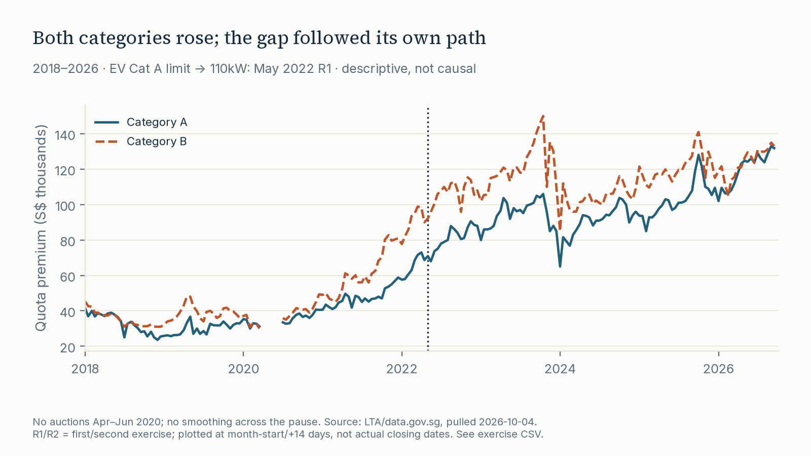
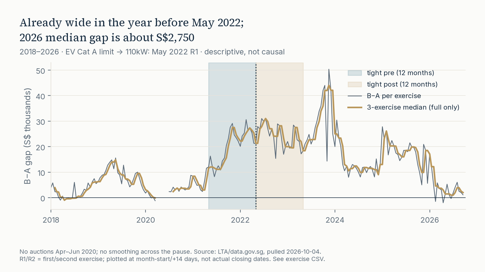

LTA COE bidding results via data.gov.sg · fixed snapshot through 2026-09 R2 · 5 of 6
The gap answer depends on the window
Both premium levels rose. The median exercise-level B−A gap rose from S$6,190.50 to S$18,198.50 in the structural comparison (+S$12,008). In the fixed ±12-month comparison it rose from S$21,745.50 to S$24,081.50 (+S$2,336): the gap was already large in the year before May 2022.
Not the effect of the rule change. Redefining A/B changed the baskets being compared. These are different observational samples, with no fixed-composition or untreated control. The small tight-window change does not establish that the rule had no effect.

Do not subtract the level columns to obtain the median paired gap. median(B)−median(A) moves structural 3,386 → 18,948.50 (+15,562.50) but tight 25,441.50 → 22,028.50 (−3,413), the opposite sign from the median paired-gap change (+12,008 structural; +2,336 tight). For the gap finding, quote the median of exercise-level B−A only.
Already wide in the year before May 2022; narrower in 2026

Calendar-year median paired gaps (S$), not a permanent post level: 2018 1,991; 2019 8,863.50; 2020 2,852.50; 2021 11,799; 2022 25,890.50 (May split); 2023 23,796.50; 2024 11,900.50; 2025 18,492.50; 2026 2,750 (Jan–Sep R2, 18 exercises). 2022 is not a post-only year. The 2026 partial-year median is below the structural-pre median.
Method — separate levels from paired differences
- Acquire and verify — independently downloaded LTA COE bidding results, pulled 2026-10-04. The vendored raw CSV has a byte-SHA-256 manifest. Download code validates before replacing raw/manifest.
- Stage and check — parse comma-formatted integers; reject duplicates, incomplete categories, missing A/B and missing scheduled auctions. Latest complete R1 can be a complete exercise without being a complete month. SQL checks.
- Pair and compare — one observation per exercise, unweighted: gap = B − A. Report the median of paired differences, not the difference of category medians. Structural windows are unequal-duration market-cycle context; tight windows are fixed calendar ±12 months, not detrended or anticipation-free. Metrics SQL.
- Stress-test — R1-only and excluding the last two pre / first two post all-round exercises. Independent stdlib calculations reproduce 12 summary rows. Independent tests.
- Draw and validate — full trailing three-exercise medians, null at the left edge and first two exercises after suspension. No smoothing across the pause. Figure producer publishes light/dark assets and site copies in the existing staged batch with ordinary-exception rollback, not crash/power-loss or whole-pipeline atomicity.
Sensitivity — sign survives, magnitude changes
R1-only median-gap changes are +S$12,398 / +S$2,792.50 (structural/tight). Excluding Apr-2022 R1/R2 and May-2022 R1/R2 gives +S$11,892.50 / +S$2,832.50. Selection uses all-round order before any R1 filter. This is consistency under the specified reads, not universal robustness or a causal estimate. Sensitivity CSV · how to read it.
What this file cannot say
LTA circular VRL/04/2022, pp 1, 4–5 raises fully electric Cat A maximum power from 97 to 110kW inclusive at the first May 2022 exercise (4–6 May), not the March announcement. Non-fully-electric A retains ≤1,600cc AND ≤97kW. This changes composition in a shared scarce-permit market; B is not an untreated control.
B−A cancels only exactly shared additive changes, not category-specific quota, demand or mix shifts. Quota/supply cycles, dealer orders, EV incentives/adoption, model availability, macro conditions and anticipation can confound the comparison. Reclassification may mechanically move measured gaps without a behavioral response. Range overlap cannot prove zero effect. Aggregate clearing prices lack individual bids, power bands, registrations and buyer substitution.
At the boundary, summed exercise quota in this snapshot moves Feb–Apr 2022 → May–Jul 2022 by Cat A 3,220 → 3,708 (+15.2%) and Cat B 3,325 → 3,168 (−4.7%); Apr R2 → May R1 is A 532 → 612 (+15.0%) and B 560 → 527 (−5.9%). This is a category-asymmetric supply change in the same file, not a control, and it is not removed by B−A. These figures come from the vendored quota column, not a separately verified release annex.
No causal estimates, difference-in-differences, significance stars, prescriptions or forecasts. The experiment-design annex discusses counterfactuals and shared-market interference; it is not an implemented experiment with this dataset.
Reproduce
The repository README carries the full rules, validation and limits. Git Bash / Bash, Windows or Linux:
Requires uv on PATH (https://docs.astral.sh/uv/) to create the Python 3.12 venv. If uv is absent, use python3.12 -m venv .venv (py -3.12 -m venv .venv on Windows), activate as below, then use the same pip line. CI uses actions/setup-python and does not run the uv line.
git clone https://github.com/faizsaifulnizam/coe-category-break && cd coe-category-break
uv venv .venv --python 3.12 --seed
if [ -f .venv/Scripts/activate ]; then source .venv/Scripts/activate; else source .venv/bin/activate; fi
python -m pip install --require-hashes -r requirements.lock
python src/download.py
python src/build_dataset.py
python src/analysis.py
python src/figures.py
python -m unittest discover -s tests -v
python tests/smoke_test.pyDefault download validates the committed snapshot without data-fetch network. Installing dependencies needs network/cache. A later --force pull requires rerunning all stages and reviewing maintained prose, chart titles and snapshot locks. Spot-check all-round gap medians: structural 6,190.50 → 18,198.50; tight 21,745.50 → 24,081.50; git diff --exit-code -- 'outputs/*.csv'.
Figure PNG bytes are not a cross-machine lock. A dirty reports/figures or docs/img after figures.py is compression/metadata-only only if the decoded pixels also match the committed PNGs. An empty CSV diff alone does not establish image equivalence; inspect any pixel differences.